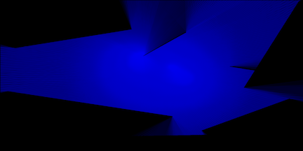

Try pressing s on your keyboard to bring up sketch manipulation options.
Take a snapshot of the canvas at any time by pressing p.
Reload the page at any time to generate a new landscape. Just press CMD+R.
Particle objects cast rays out as they dance around a randomized landscape, creating dynamic play with light and shadow as they move. If a particle object passes through a wall, there is a chance for it to change color.
GUI Variable Descriptions
- boundaryC:
Set the color for the boundaries to be rendered by using a simple color-picker interface.
- backgroundC:
Set the color for the background the to be rendered by using a simple color-picker interface.
- backgroundA:
Adjust the Alpha transparency of the background.
- randomizeRayColors:
If randomizeRayColors is enabled, the particles have a chance of picking random HSB values between their minimum values and 100. For example, adjusting raySat to 20 with randomizeRayColors enabled will allow the particles to randomly pick saturation values between 20 and 100 whenever they pass through a boundary.
- rayHue:
Set the hue for the casted rays via the color picker. This setting is overridden when randomizeRayColors is enabled.
- raySat:
Set the saturation for the casted rays. This setting is overridden when randomizeRayColors is disabled and saturation can be adjusted through the color-picker.
random(raySat, 100); - rayBright:
Set the brightness for the casted rays. This setting is overridden when randomizeRayColors is disabled and brightness can be adjusted through the color-picker.
random(rayBright, 100); - rayAlpha:
Set the alpha transparency for the casted rays.
- numParticles:
Increase or decrease the number of active particle-objects in the scene. Increasing this value will decrease FPS.
- numRays:
Change the number of rays each particle sends out. Default is 360.
- rayIncrement:
THIS FEATURE IS CURRENTLY DISABLED. Increase or decrease the distance between casted rays.
- mouseFollowEnabled:
If enabled, one of the particles will follow the mouse around the scene when the mouse is pressed.
This 2D ray cast system is based on an example by The Coding Train.
Another excellent tutorial on ray casting by Red Blob Games is available here.
A third tutorial on ray casting by ncase is available here.
Here are a few examples of stills created through this generator:
